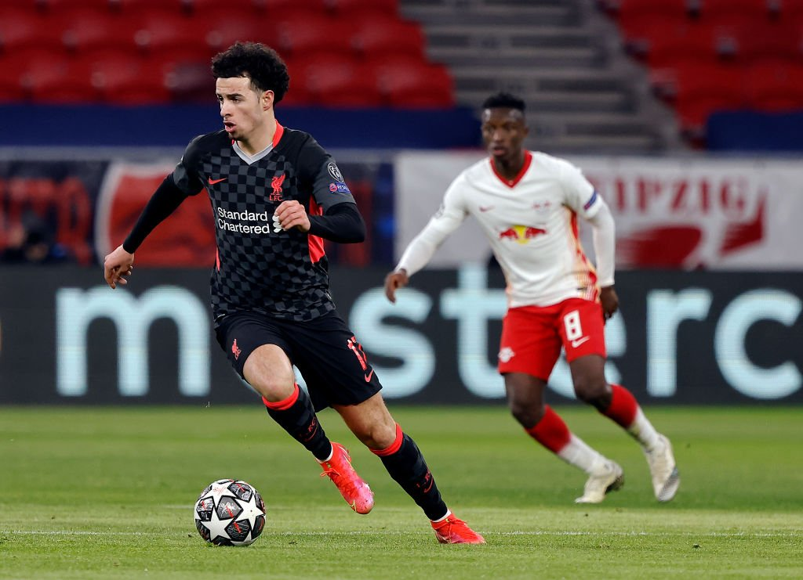
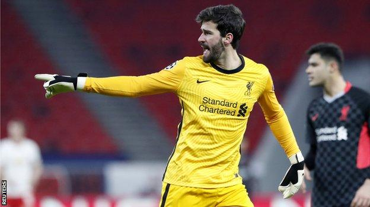

Final Score: RB Leipzig 0 - 2 Liverpool
Ringing in the return of the Champions League, Liverpool and Leipzig alike traveled to Hungary to play out the first leg of their knockout tie. With the German side coming in much more in form than their English counterparts, there was much speculation that we would see Liverpool struggle with Leipzig’s dynamic play. Despite a few chances that were dealt with by Alisson, Liverpool proved to be all too much for the young German club as they capitalized on Leipzig’s errors and finished with a 2-0 victory. Here are some key takeaways from the match:
1. Jones and Kabak Stepped Up To The Challenge
In an injury-ridden squad, it is vital to have players step up in big games. Making his Champions League debut, 20-year-old Ozan Kabak proved to everyone that he belongs at this level of competition. Winning aerial duels and cutting out passes in behind, Kabak was the perfect pairing to Henderson in Liverpool’s makeshift backline. It is only his second appearance for the club, but to an untrained eye, it would look as though he has been playing in this squad for years. In addition to Kabak’s defensive marshaling, another one of Liverpool’s youngsters made his mark in the midfield. Curtis Jones has truly come into himself over the past six months and showed today why Klopp sings such high praises for him. The 20-year-old Scouser plays with such confidence and awareness of everything around him, weaving in between defenders and picking out passes at will. With a fight for top four ahead of the Merseyside club and more Champions League games to contend in, these young boys will be key to Liverpool finding victories.

2. Upamecano is Worth Every Penny
The first big signing of the summer was announced earlier this week as Leipzig center back Dayot Upamecano will be heading to Bayern following the conclusion of their season. The French international has been vital to Leipzig’s backline, combining pace and defensive awareness to cut out every pass and run down even the fastest attackers. Despite losing to Liverpool, Upamecano can be credited with keeping the score from getting out of hand. Multiple times he was seen catching the likes of Mo Salah and Bobby Firmino in their attempts to get behind the defensive line, clearing balls over the top and stopping the attackers in their paths. In a game of defensive errors on Leipzig’s side, Upamecano was a picture of consistency throughout the game and showed just why Bayern paid $50 million to sign him. If Leipzig home to make a comeback at Anfield in the second leg, they will need Upamecano to put in another performance like he did yesterday.
3. A Much Needed Clean Sheet For Alisson
It has been an unusually rocky road for Liverpool’s #1 these last couple of weeks as Alisson has had 3 errors leading to goals in just 2 games. While he is not the sole man to blame for their recent losses, he has taken a lot of flak from the media implying that his job is under fire. Coming into a game against a dynamic Leipzig attack, there was nothing that Alisson needed more than a clean sheet to get some of his confidence back. Despite a few shaky clearances and overall mediocre distribution of long balls, Alisson did everything he needed to do to prove that he deserves his spot in this team. Making a couple of solid saves, including a one on one goal-saving deflection, the Brazilian keeper did everything necessary to keep Leipzig’s attack at bay for the full 90 minutes. With another important game coming up this weekend, Alisson will need to build off of this clean sheet in order to help Liverpool make their way back into the top four.

4. Leipzig Need to Clean Up Their Defense
Having conceded the fewest number of goals in the Bundesliga this season, RB Leipzig are known for their defensive prowess. Their defensive three of Klostermann, Upamecano, and Mukiele have proven too quick and too smart for most teams they’ve played. However, on a stage as big as the Champions League knockouts, the pressure can get to players. While Liverpool were on the front foot the entire match, both of their goals came from Leipzig errors. The first, a horrible pass back from Marcel Sabitzer caught Leipzig’s defense off guard, stumbling to catch up to Mo Salah who picked up the pass and slotted it past Gulacsi in net. The second, a horrible attempted clearance from Mukiele who completely missed the ball and allowed Mane to walk into the box before netting the second. These errors simply cannot be made in this competition because you will be punished for them. Manager Julian Nagelsmann was every Leipzig fan on the sideline as he could not hide his frustration with his side. Since Leipzig are usually so solid defensively, they will most likely come back into themselves and go back to their lockdown ways, but being down two goals and having to play away from home next cannot be the situation they hoped to be in.
5. Down But Not Out
Yes, Leipzig are not in the position they would have hoped to be in, however, they are far from out of this competition. Liverpool have now lost their last three home games, and it is clear that without fans present, Anfield is no longer the fortress it used to be. Looking at the match yesterday, it is clear that Leipzig have the capability to breach Liverpool’s backline, all it will take is some more clinical finishing to find the back of the net. The Reds are known for their high lines and intense pressure, so there is little chance that they do not play the same way even with their two-goal cushion. If Leipzig can sure up defensively and start finding balls over and through Liverpool’s backline, there is no doubt that the German club can make this matchup very interesting. Anfield was home to one of the greatest second-leg comebacks in Champions League history two years ago when Liverpool bested Barcelona in a 4-0 victory. Could we see Anfield host another one of these upsets, this time in Leipzig’s favor rather than the home team’s? It may be a long shot if Liverpool can get their form back, however, the best part about the Champions League is its unpredictability, and all eyes will be on Leipzig to see if they have the heart to come back from this deficit.